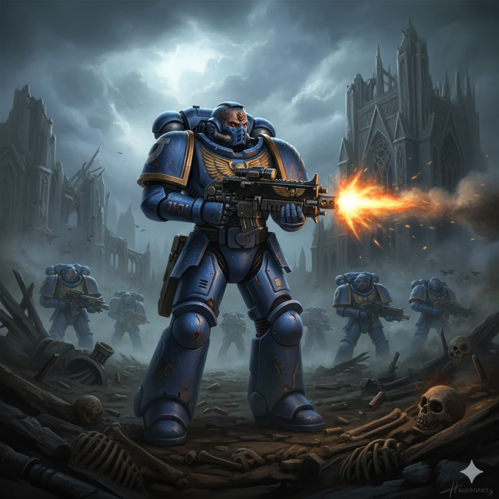
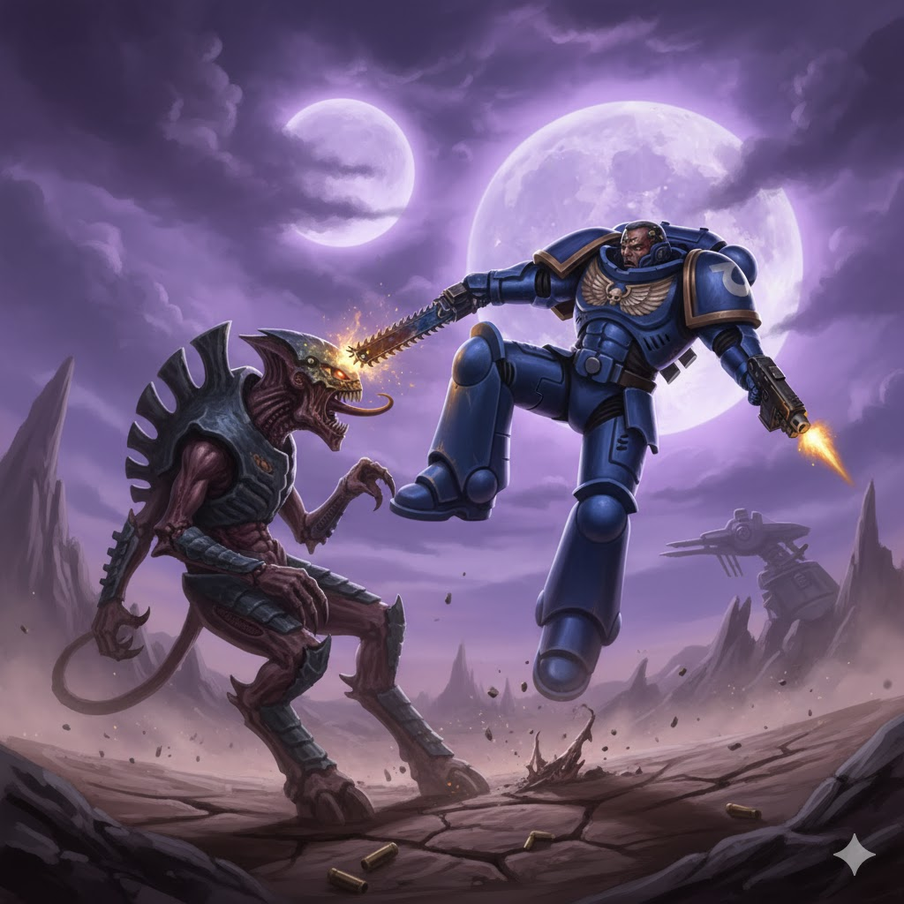

Humanos

O Império da Humanidade
A humanidade forma o maior império galáctico de Warhammer 40K. O Imperador da humanidade guia bilhões de almas, protegidas por exércitos, naves colossais e fé absoluta no imperium.

Space Marines
Os Space Marines são guerreiros geneticamente aprimorados, armas vivas do Império. Seus feitos inspiram lendas e suas batalhas garantem a sobrevivência dos humanos diante das facções alienígenas.
Curiosidades
- O Imperium abrange milhares de sistemas estelares.
- As maiores ameaças aos humanos são o Caos, Xenos e a corrupção interna.
- Grandes subfacções: Astra Militarum (Guarda Imperial), Adeptus Mechanicus, Inquisition, Lembresse O Imperador Protegue mas uma Bolter ajuda.